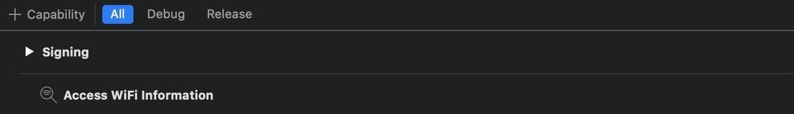
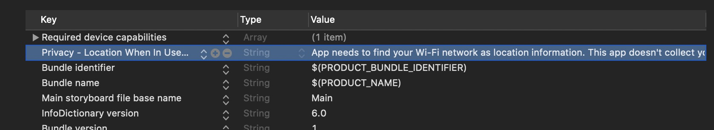
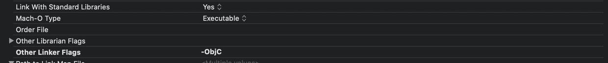
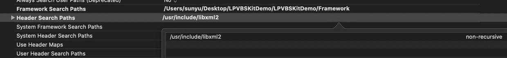

集成 SDK
建议您使用CocosPods 集成SDK，当然您也可以下载SDK并手动配置项目以使用它。
1.集成LPMusicKitSDK
Linkplay Music Kit是Linkplay Home Audio方案的app端SDK；通过它，您可以快速的将我们的解决方案实现到您的产品里。
MusicKit主要解决了两方面的问题：
维护与固件的通讯协议，使您可以简洁的与设备进行交互而不必关心琐碎的通讯技术问题
封装了网络服务（音乐服务、智能语音服务等）的复杂度，使您可以快速接入它们而不必关心实现细节
1.使用 CocoaPods 快速集成（ SDK 最低支持系统版本 10.0）
- 在
Podfile文件中添加对应的SDK地址进行集成，如集成设备SDK：
platform :ios, '10.0'
target 'your_target_name' do
pod "LPMusicKitiOS", :git => "https://github.com/linkplayapp/LPMusicKitiOS.git"
end
然后在项目根目录下执行 pod update 命令进行集成。
CocoaPods 的使用请参考：CocoaPods Guides CocoaPods 建议更新至最新版本
- 申请Wi-Fi 权限 
- iOS13申请定位权限, Info.plist 文件中添加 NSLocationWhenInUseUsageDescription 
2.手动配置项目
- 下载 LPMusicKitiOS
- 导入 LPMusicKit.framework、LinkPlayBonjourSDK.framework两个Framework
- 导入AFNetworking 和 LPMusicKitiOS/Third 中的三方库

- Build Settings, 设置 Other Linker Flags 的值为 -ObjC 
- Header Search Paths: 添加 /usr/include/libxml2 路径 
- 申请Wi-Fi 权限
- iOS13申请定位权限, Info.plist 文件中添加 NSLocationWhenInUseUsageDescription
以下是LinkPlay 各个SDK的地址：
pod "LPMusicKitiOS", :git => "https://github.com/linkplayapp/LPMusicKitiOS.git"
pod "LPBLESetupiOS", :git => "https://github.com/linkplayapp/LPBLESetupiOS.git"
pod "LPAlexaKitiOS", :git => "https://github.com/linkplayapp/LPAlexaKitiOS.git"
pod "LPMSNASiOS", :git => "https://github.com/linkplayapp/LPMSNASiOS.git"
source 'https://github.com/linkplayapp/LPSpecsiOS.git' source 'https://github.com/CocoaPods/Specs.git'
target 'your_target_name' do
pod "LPMSMediaLibraryiOS", :git => "https://github.com/linkplayapp/LPMSMediaLibraryiOS.git"
end
然后在项目根目录下执行 pod update 命令进行集成。
CocoaPods 的使用请参考：CocoaPods Guides CocoaPods 建议更新至最新版本